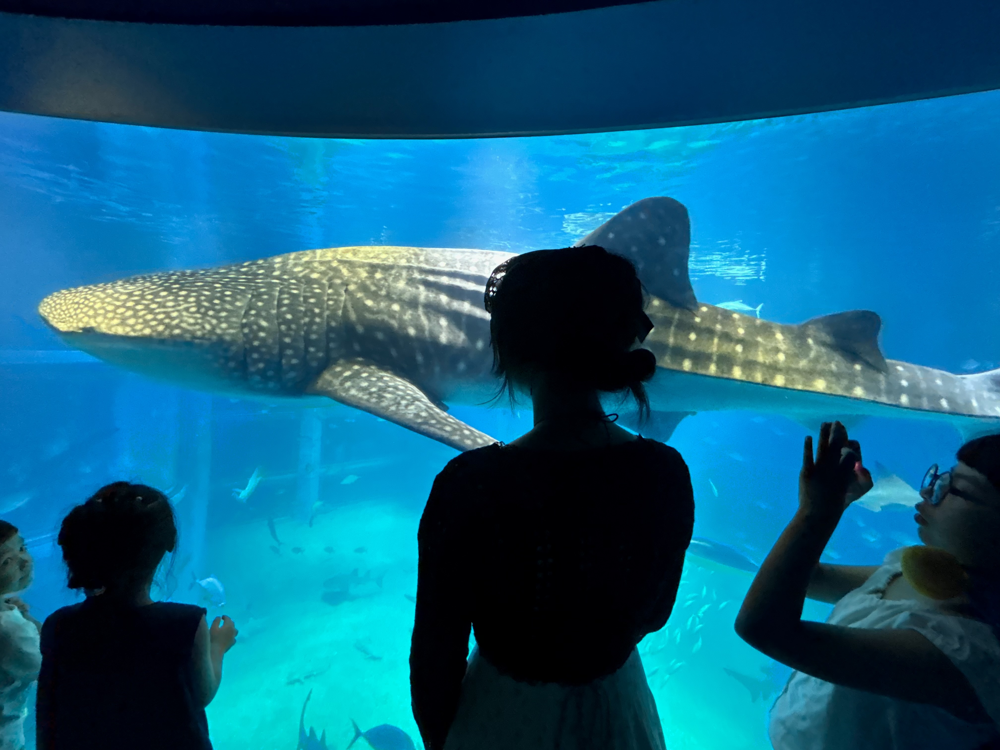
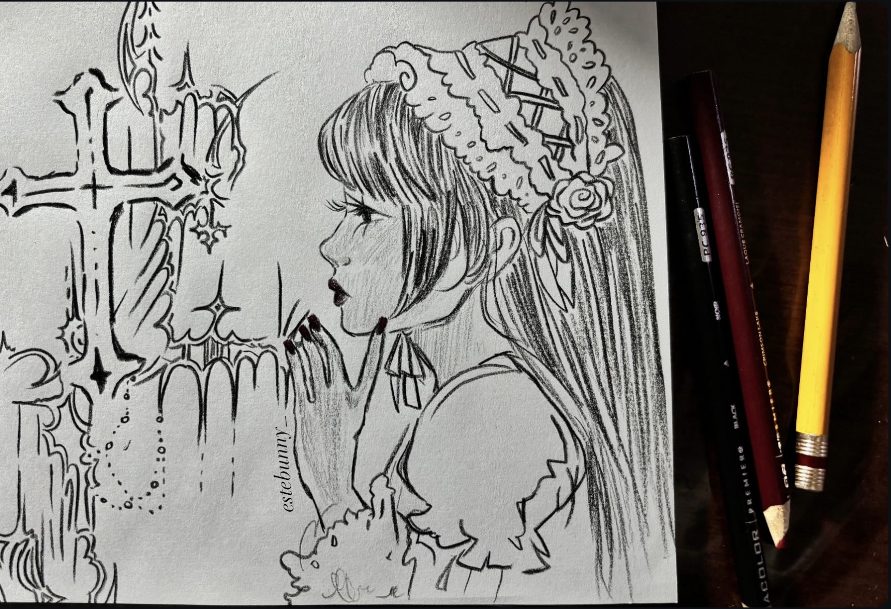
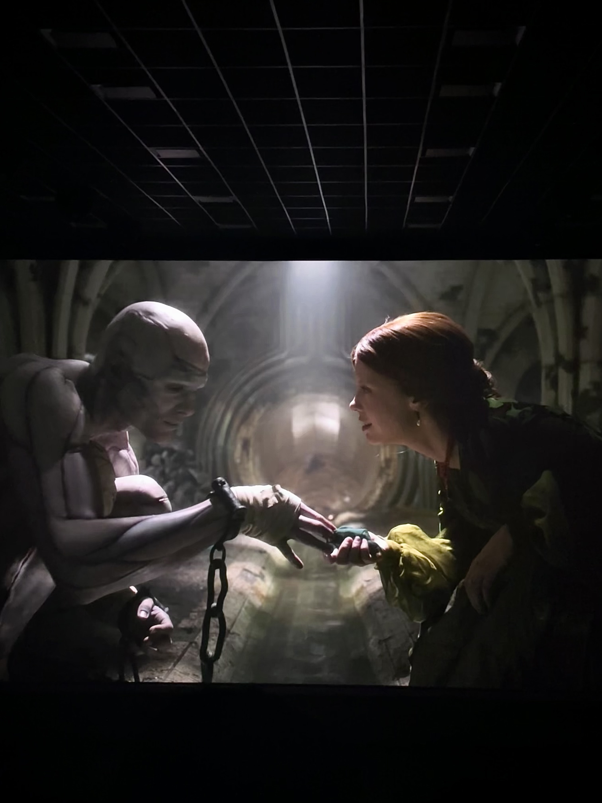

Secundaria: María González Palma, Mérida, Yucatán.
Medio Superior: Universidad del Valle de México, Mérida, Yucatán.
Superior: ESCOM - IPN. En curso, CDMX.
Institución: ESCOM - Instituto Politécnico Nacional
📧 patriciamartinezo2200@alumno.ipn.mx | GitHub
Secundaria: María González Palma, Mérida, Yucatán.
Medio Superior: Universidad del Valle de México, Mérida, Yucatán.
Superior: ESCOM - IPN. En curso, CDMX.

Me encanta conocer nuevos lugares y culturas, además es muy divertido interactuar cuando existen diferencias de idioma; me ayuda a practicar mi inglés o interesarme a aprender uno nuevo.

Paso parte de mi tiempo libre dibujando y pintando, ya que es una habilidad que se me da bien desde niña.

Me gusta hacer maratones, mi género favorito es el terror, aunque también soy un tanto aficionada a la animación, sobre todo asiática.
Este clásico método de sustitución es en realidad una simple suma modular: $C \equiv (P + K) \pmod{26}$. Su evolución matemática, el cifrado Vigenère, usó múltiples alfabetos y resistió ataques durante 300 años.
El primer sistema criptográfico militar (siglo V a.C.) no alteraba las letras, solo su orden. En términos de programación, es el equivalente histórico a reordenar los índices de un arreglo en memoria sin alterar sus valores.
Inventado en 1795, usaba 36 discos de madera giratorios. Fue el antepasado de la máquina Enigma y, conceptualmente, una de las primeras implementaciones mecánicas de las complejas máquinas de estado que hoy se diseñan en VHDL o Verilog.
Da click debajo para descargar mi llave pública.
⬇ Descargar Llave Pública